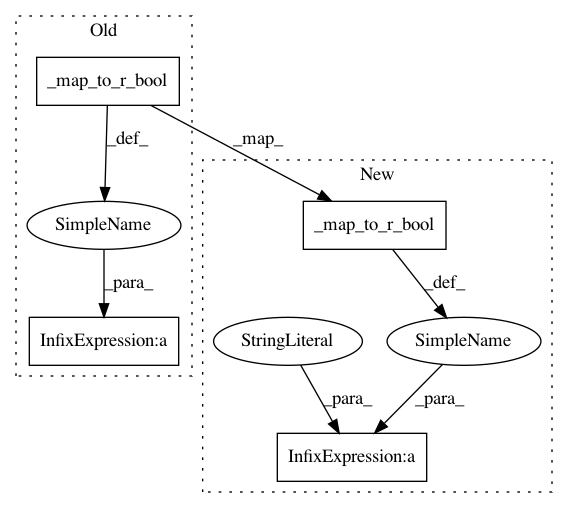

123f415de1d2fdf3b0c4b5c6cbdeb5e46b284bfb,bears/r/FormatRBear.py,FormatRBear,create_arguments,#,26
Before Change
1
```
rcode = ("library(formatR);"
"formatR::tidy_source("
"source="" + escape(filename, ""\\") + "","
"comment={r_keep_comments},"
"blank={r_keep_blank_lines},"
"arrow={r_use_arrows},"
"brace.newline={r_braces_on_next_line},"
"indent="
"{tab_width}".format(tab_width=tab_width,
r_keep_comments=_map_to_r_bool(
r_keep_comments),
r_keep_blank_lines=_map_to_r_bool(
r_keep_blank_lines),
r_use_arrows=_map_to_r_bool(
r_use_arrows),
r_braces_on_next_line=_map_to_r_bool(
r_braces_on_next_line)))
// Disable r_max_expression_length if it is equal to 0
rcode += ("" if r_max_expression_length == 0
else ",width.cutoff=" + str(r_max_expression_length)) + ")"
return "-e", rcode
After Change
options = {"source="" + escape(filename, ""\\") + """,
"blank=" + _map_to_r_bool(r_keep_blank_lines),
"brace.newline=" + _map_to_r_bool(r_braces_on_next_line),
"comment=" + _map_to_r_bool(r_keep_comments),
"arrow=" + _map_to_r_bool(r_use_arrows),
"indent=" + str(tab_width)}
In pattern: SUPERPATTERN
Frequency: 4
Non-data size: 4
Instances
Project Name: coala/coala-bears
Commit Name: 123f415de1d2fdf3b0c4b5c6cbdeb5e46b284bfb
Time: 2016-07-02
Author: ngoullasob@gmail.com
File Name: bears/r/FormatRBear.py
Class Name: FormatRBear
Method Name: create_arguments